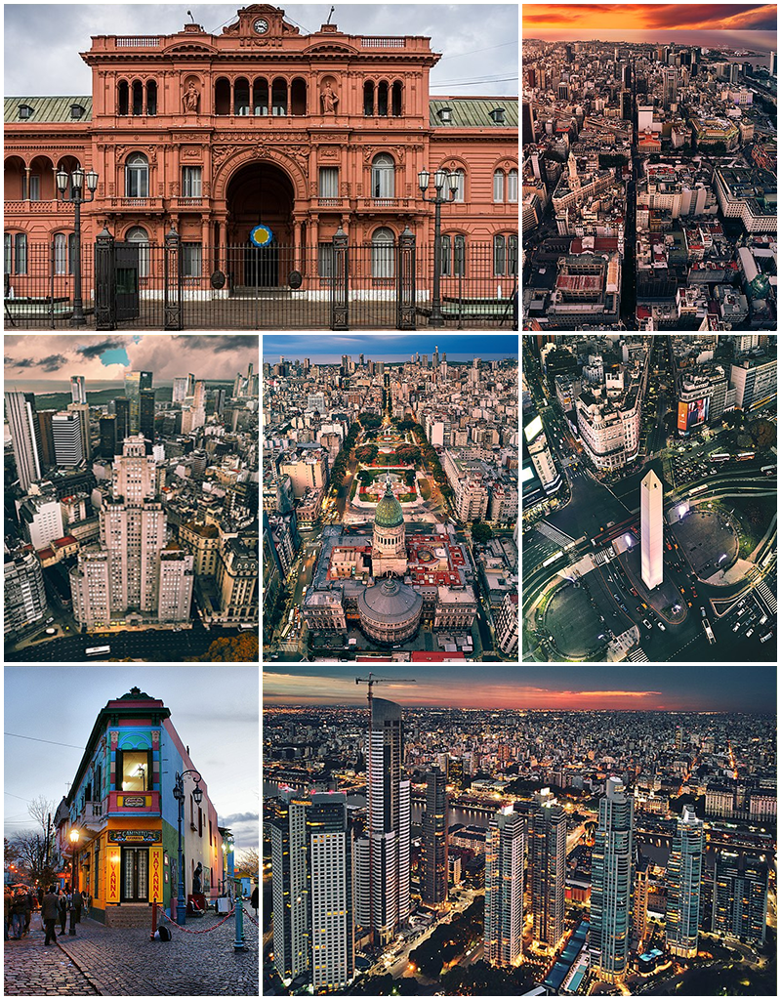
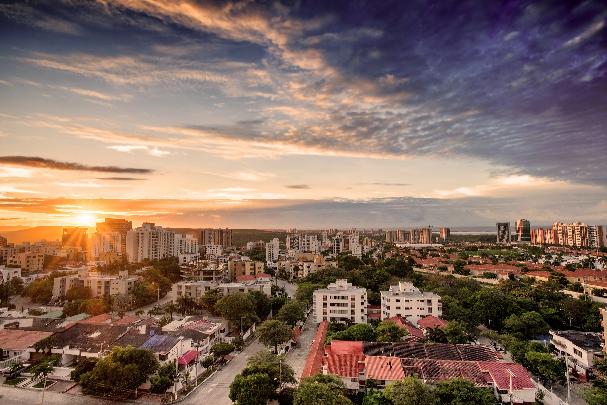

Viena, Austria

Descripción: Viena es la capital de Austria, conocida por su rica historia, su arquitectura imperial y su legado musical. La ciudad es hogar de impresionantes palacios como Schönbrunn y el Hofburg, así como de famosos cafés y la Ópera Estatal de Viena. Es un destino cultural lleno de museos, teatros y parques.
Berlín, Alemania

Descripción: Berlín, la capital de Alemania, es una ciudad vibrante con una mezcla única de historia y modernidad. Famosa por su vida nocturna, sus museos de clase mundial y su historia política, Berlín ofrece puntos de interés como el Muro de Berlín, la Puerta de Brandeburgo y el Reichstag. Es un crisol de culturas con un ambiente artístico y multicultural.
Tokio, Japón

Descripción: Tokio, la capital de Japón, es una metrópolis futurista conocida por su tecnología avanzada, sus rascacielos y su cultura pop. Sin embargo, también alberga tranquilas áreas tradicionales con templos, santuarios y jardines, como el Santuario Meiji y el Templo Senso-ji. Es un lugar donde la tradición y la modernidad coexisten en perfecta armonía.
Buenos Aires, Argentina

Descripción: Buenos Aires, la capital de Argentina, es una ciudad vibrante conocida por su arquitectura de estilo europeo, su vida nocturna y su cultura del tango. Desde el icónico Obelisco hasta los coloridos edificios de La Boca y el elegante barrio de Recoleta, Buenos Aires ofrece una mezcla única de tradición, cultura y modernidad.
Barranquilla, Colombia
